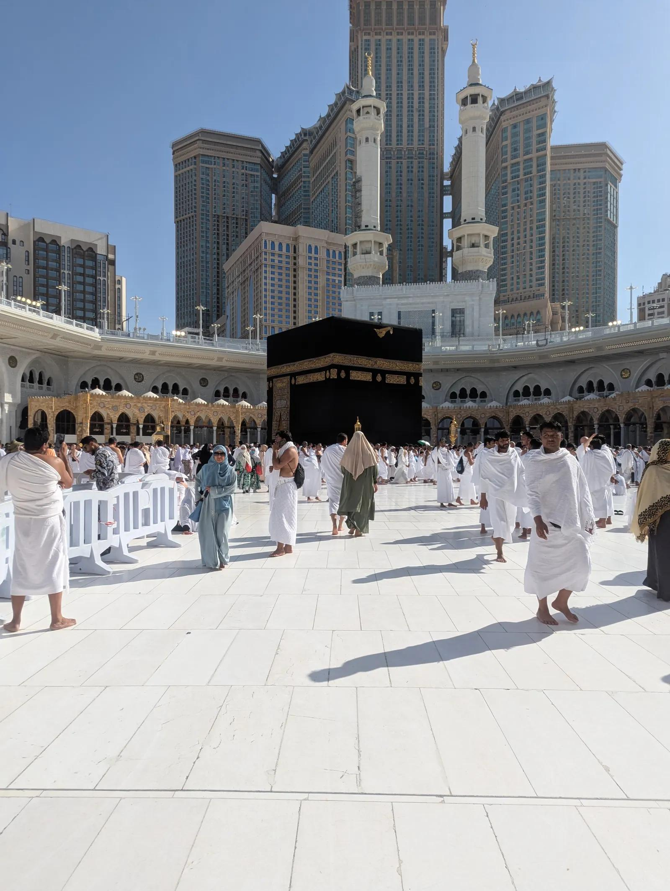

Duas
Umrah Duas — Complete Collection for the Journey

Quick answer: Umrah has only a handful of moments where the Prophet ﷺ himself taught the words: the Talbiyah on entering Ihram, "Bismillah, Allahu Akbar" at the Black Stone, "Rabbana atina…" in the last stretch of every Tawaf circuit, and the verse and dhikr on Safa. Around those fixed points, everything is open — the Multazam, the Zamzam cup, the long walk of Sa'i — for your own dua, in your own language, from your own heart. This page gathers the established duas in the order you will need them, each with its Arabic, transliteration, translation and source. For a printable one-page version spanning the whole trip, see our Umrah Dua Book.
1. The Talbiyah — on entering Ihram: From the moment you make your intention and enter Ihram, you take up the Talbiyah and keep repeating it until you reach the Kaaba and begin Tawaf. It is the pilgrim's answer to Allah's call:
لَبَّيْكَ اللَّهُمَّ لَبَّيْكَ، لَبَّيْكَ لَا شَرِيكَ لَكَ لَبَّيْكَ، إِنَّ الْحَمْدَ وَالنِّعْمَةَ لَكَ وَالْمُلْكَ، لَا شَرِيكَ لَكَ
"Labbayk Allahumma Labbayk, Labbayka la sharika laka Labbayk, innal-hamda wan-ni'mata laka wal-mulk, la sharika lak"
"Here I am, O Allah, here I am. Here I am — You have no partner — here I am. Truly all praise, all blessing and all sovereignty are Yours. You have no partner." (Sahih al-Bukhari 1549; Sahih Muslim 1184)
2. On first seeing the Kaaba: When the Kaaba first comes into view, raise your hands — the first sight is remembered as a moment when dua is accepted — and say the well-known dua reported by al-Shafi'i in al-Umm:
اللَّهُمَّ زِدْ هَذَا الْبَيْتَ تَشْرِيفًا وَتَعْظِيمًا وَتَكْرِيمًا وَمَهَابَةً
"Allahumma zid hadha al-bayta tashrifan wa ta'ziman wa takriman wa mahabah"
"O Allah, increase this House in honour, greatness, nobility and awe."
An honest note: this dua is widely loved and widely used, but scholars differ on the strength of its chain of narration — it does not carry the same certainty as the Talbiyah above. Say it if you wish, then follow it with your own dua for whatever you came carrying; nothing is lost either way.
3. During Tawaf: At the start of every circuit, facing the Black Stone, say "Bismillah, Allahu Akbar" — "In the name of Allah; Allah is the Greatest." Then, in the final stretch of each circuit, between the Yemeni Corner and the Black Stone, recite the dua of the Qur'an:
رَبَّنَا آتِنَا فِي الدُّنْيَا حَسَنَةً وَفِي الْآخِرَةِ حَسَنَةً وَقِنَا عَذَابَ النَّارِ
"Rabbana atina fid-dunya hasanatan wa fil-akhirati hasanatan wa qina 'adhaban-nar"
"Our Lord, give us good in this world and good in the Hereafter, and protect us from the punishment of the Fire." (Qur'an 2:201; Sunan Abi Dawud 1892)
For the rest of Tawaf — what is established, what is not, and why no circuit has a dua of its own — see our Tawaf Duas article.
4. On Safa, at the start of Sa'i: As you approach Safa, first recite the words of the Qur'an:
إِنَّ الصَّفَا وَالْمَرْوَةَ مِنْ شَعَائِرِ اللَّهِ
"Innas-safa wal marwata min sha'a'irillah"
"Indeed, Safa and Marwah are among the symbols of Allah." (Qur'an 2:158)
Then climb Safa, face the Kaaba, raise your hands, say Allahu Akbar three times and make dua — exactly as the Prophet ﷺ did, as described in the long hadith of Jabir (RA) (Sahih Muslim 1218). Do the same on Marwah, and on every hilltop of the seven lengths.
5. At the Multazam: The Multazam is the wall of the Kaaba between the Black Stone and its door, where pilgrims press close and pour out their hearts. There is no fixed wording here — no prescribed dua you must find or lose the moment. Stand there if the crowd allows, without pushing anyone, and ask Allah for what you actually came with: forgiveness, your parents, your family, your needs in this world and the next. Sincerity is the whole of it.
6. When drinking Zamzam: Face the qiblah, say Bismillah, and before you drink, set your intention and say the dua reported from Ibn Abbas (RA):
اللَّهُمَّ إِنِّي أَسْأَلُكَ عِلْمًا نَافِعًا وَرِزْقًا وَاسِعًا وَشِفَاءً مِنْ كُلِّ دَاءٍ
"Allahumma inni as'aluka 'ilman nafi'an wa rizqan wasi'an wa shifa'an min kulli da'"
"O Allah, I ask You for beneficial knowledge, abundant provision, and healing from every disease."
The intention matters because of the Prophet's ﷺ own words: "Zamzam water is for whatever it is drunk for" (Sunan Ibn Majah 3062, graded hasan). Decide what you are asking for, then drink. The full story of the well is in our Zamzam Water article.
Practical tip: Save this page offline before you travel — phone signal inside the Haram can be weak. The permits that get you into the Haram and the Rawdah run through one app, covered step by step in our Nusuk App Complete Guide, and everything else you need to carry is on our Umrah Packing List.
Quick questions:
- Do I have to memorise all the duas? No. The Talbiyah, the takbir at the Black Stone, "Rabbana atina" and the Safa verse are short and worth learning by heart — but the rest can be read from your phone or a booklet, or replaced with your own sincere words. No dua is wasted because it was not memorised.
- Can I make dua in my own language? Yes — anywhere, and above all in the open moments: the Multazam, the walk of Sa'i, drinking Zamzam. Allah hears every language. The Arabic on this page is for the specific moments where the Prophet ﷺ taught specific words.
- Is there a fixed dua for each Tawaf circuit? No. Apart from "Bismillah, Allahu Akbar" at the Black Stone and "Rabbana atina…" between the Yemeni Corner and the Black Stone, no circuit carries its own prescribed dua. The printed dua-per-round booklets are a later help for pilgrims, not a requirement — fill the circuits with dhikr, Qur'an and your own dua.
Sources: Sahih al-Bukhari 1549 — Sunnah.com ↗ · Sahih Muslim 1184 — Sunnah.com ↗ · Sahih Muslim 1218 — Sunnah.com ↗ · Sunan Abi Dawud 1892 — Sunnah.com ↗ · Sunan Ibn Majah 3062 — Sunnah.com ↗ · Qur'an 2:158 ↗ · Qur'an 2:201 ↗ · al-Shafi'i, al-Umm (dua on first seeing the Kaaba; scholars differ on its chain)